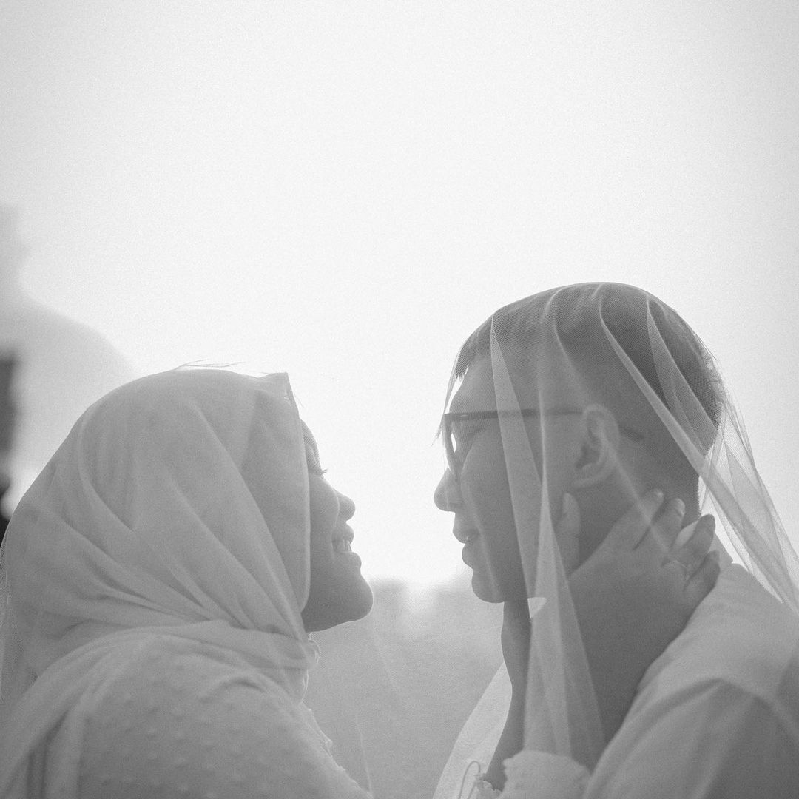
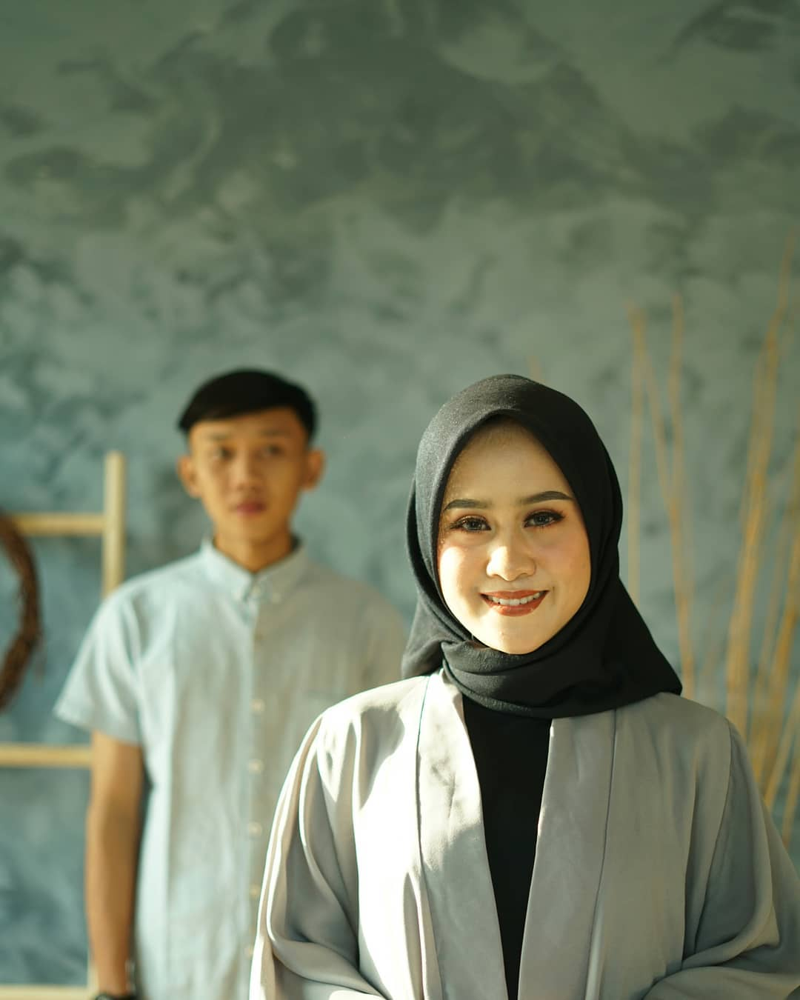
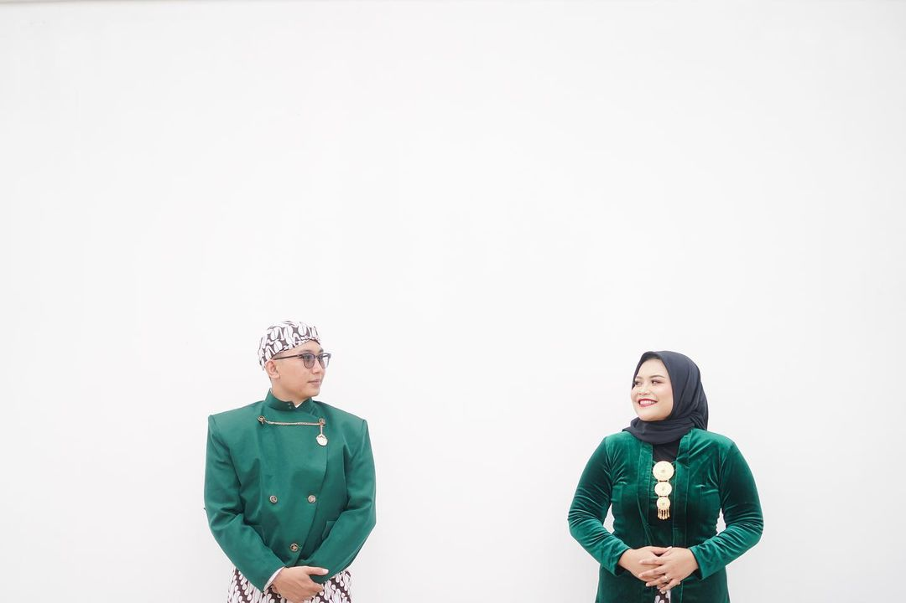
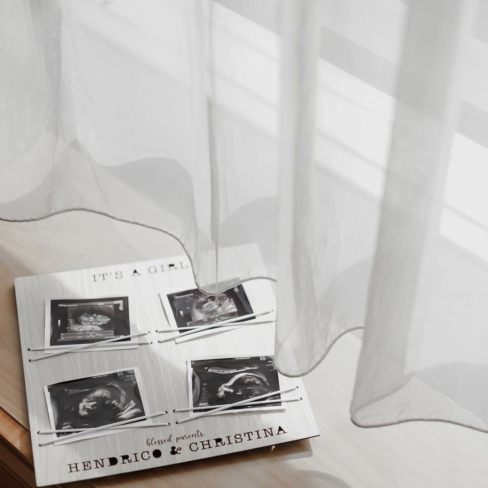

Portraits of people, honestly observed
Hold on to
how it felt.

Unhurried photographs of couples, families, and milestones. Made with attention to the gestures that happen between poses.
View selected workCurrent edit / 01
A sequence in
soft light.
The portfolio is edited like a printed story: one image leads, the rest give it context.



How I work
A little direction.
Plenty of room to be yourselves.
The camera never needs to turn a moment into a performance. We begin slowly, find the light, and let familiar expressions arrive on their own.
Every finished gallery is shaped around atmosphere as much as occasion, so the photographs still feel like your day when you return to them years later.
Meet the photographer